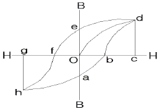
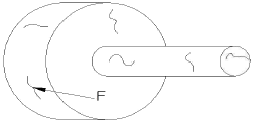
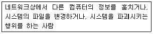

자기비파괴검사기능사 (2010-01-31 기출문제)
1과목: 자기탐상시험법
1. 다음 중 와전류탐상시험에서 와전류의 분포 및 강도의 변화에 영향을 주는 인자와 가장 거리가 먼 것은?
- 시험체의 전도도
- 시험체의 크기와 형태
- 접촉 매질의 종류와 양
- 코일과 시험체 표면사이의 거리
(정답률: 56%)

2. 침투탐상시험으로 미세한 균열을 검출하는데 가장 검출감도가 좋은 탐상 방법은?
- 수세성 형광침투탐상시험
- 후유화성 형광침투탐상시험
- 용제제거성 염색침투탐상시험
- 용제제거성 형광침투탐상시험
(정답률: 72%)
3. 절대온도(K)를 환산하는 식으로 옳은 것은?
- K=273+℃
- K=273-℃
- K=460+℃
- K=460-℃
(정답률: 83%)
4. 초음파탐상시 두께 측정에 가장 적합한 시험방법은?
- 사각법
- 수침법
- 공진법
- 횡파법
(정답률: 74%)
5. X선 필름에 영향을 주는 후방산란을 방지하기 위한 가장 적당한 조작은?
- X선관 가까이 필터를 끼운다.
- 필름의 표면과 피사체 사이를 막는다.
- 두꺼운 마분지로 필름 카세트를 가린다.
- 두꺼운 납판으로 필름 카세트 후면을 가린다.
(정답률: 64%)
6. 중심 도체에 의한 자분탐상시험시 파이프에서 자계가 가장 큰 부분은?
- 파이프의 외측 표면
- 파이프의 내측 표면
- 파이프 내의 중간 지점
- 파이프 외면 밖의 일정 거리
(정답률: 55%)
7. 비파괴검사에 대한 일반적인 설명으로 옳지 않은 것은?
- 자분탐상시험은 표면결함 검출에 적용된다.
- 초음파탐상시험은 작업자의 숙련도에 크게 좌우된다.
- 침투탐상시험은 강자성체에만 적용할 수 있다.
- 방사선투과시험은 검사체 내부결함 검출에 유용하다.
(정답률: 79%)
8. 표면 또는 표면직하 결함 검출을 위한 비파괴검사법과 거리가 먼 것은?
- 방사선투과검사
- 자분탐상검사
- 침투탐상검사
- 와전류탐상검사
(정답률: 78%)
9. 초음파탐상시험에 사용되는 “초음파”에 대한 설명으로 틀린 것은?
- 파장이 짧아 빛과 같이 직진성을 갖는다.
- 음파보다 낮은 주파수 성분을 가지고 있다.
- 고체 내에서는 일반적으로 종파와 횡파 2종류의 초음파가 존재한다.
- 초음파가 전달되는 물질의 종류와 초음파의 종류에 따라서 초음파의 전파속도가 결정된다.
(정답률: 60%)
10. 자분탐상시험법의 적용에 대한 설명으로 틀린 것은?
- 강 용접부 등의 표면 결함검사에 적용된다.
- 철강재료의 터짐 등 표면결함의 검출에 적합하다.
- 철강재료 뿐만 아니라 비철 재료의 검사에 적합하다.
- 표면이 열리지 않은 표면 직하의 내부 터짐 결함도 검출이 가능하다.
(정답률: 73%)
11. 관통된 불연속만 탐지할 수 있어서 주로 최종 건전성평가시험에 사용되는 비파괴검사법은?
- 육안시험
- 누설시험
- 자분탐상시험
- 방사선투과시험
(정답률: 51%)
12. 자분탐상 시험결과로 나타나는 것으로 부품의 수명에 가장 나쁜 영향을 주는 불연속을 무엇이라 하는가?
- 결함
- 의사 지시
- 건전 지시
- 단면 급변 지시
(정답률: 75%)
13. 와전류탐상시험의 장점에 대한 설명으로 틀린 것은?
- 결과의 기록보존이 가능하다.
- 고온, 고압의 조건에서도 탐상이 가능하다.
- 두꺼운 재료의 내부결함 검사에 효과적이다.
- 비접촉법으로 시험속도가 빠르고 자동화가 가능하다.
(정답률: 76%)
14. 모세관현상을 이용하여 균열을 검출하는 비파괴검사법은?
- 침투탐상시험
- 자분탐상시험
- 방사선투과시험
- 초음파탐상시험
(정답률: 77%)
15. 강자성체의 자분탐상시험에서 균열이 검출되었을 때 균열에 자분이 모이는 원인은?
- 표피효과 때문에
- 도플러효과 때문에
- 항자력이 발생하므로
- 누설자속이 발생하므로
(정답률: 46%)
16. 자분탐상시험에서 표면의 불규칙한 부분에 기계적 힘이나 중력에 의해 자분이 밀집되어 결함처럼 나타나는 경우가 있다. 자장의 누설이 아닌 경우 이를 무엇이라 하는가?
- 관련 지시
- 자분 필적
- 거짓 지시
- 불연속 지시
(정답률: 58%)
17. 대형 구조물의 용접부를 극간법으로 자분탐상하는 경우 일반적으로 직류보다 교류가 좋은 이유는?
- 교류의 경우 탈자를 하지 않아도 좋다.
- 자극의 접촉상태가 나쁜 경우 교류가 그 영향이 현저히 작다.
- 철심단면적이 같은 경우 교류가 철심 중의 전자속이 많게 된다.
- 직류의 경우 판 두께의 영향을 받지만 교류의 경우는 영향을 받지 않는다.
(정답률: 52%)
18. 자화전류를 제거한 후에도 잔류자기를 갖는 자성체의 성질은?
- 투자성
- 반자성
- 포화점
- 보자성
(정답률: 84%)
19. 형광습식법에 의한 연속법의 자분탐상시험 공정을 바르게 나타낸 것은?
- 전처리→자화→자분적용→자화종료→관찰
- 전처리→자분적용→자화→자화종료→관찰
- 전처리→자화→자화종료→자분적용→관찰
- 전처리→자분적용→자화→자화종료→후처리→관찰
(정답률: 64%)
20. 침투탐상시험과 비교한 자분탐상시험의 설명으로 틀린 것은?
- 침투탐상시험에 비해 검사표면이 다소 거칠어도 결함검출이 가능하다.
- 침투탐상시험에 비해 검사표면이 얇게 도금되어 있어도 검사가 가능하다.
- 침투탐상시험에 비해 검사표면에 이어진 미세한 기공(porosity)의 검출에도 우수하다.
- 침투탐상시험에 비해 표면결함과 표면하에 존재하는 어느 정도의 결함 검출이 가능하다.
(정답률: 33%)
2과목: 자기탐상관련규격
21. 자분탐상시험에서 원형자화를 시키기 위한 방법의 설명으로 옳은 것은?
- 부품의 횡단면으로 코일을 감는다.
- 부품의 길이 방향으로 전류를 흐르게 한다.
- 요크(yoke)의 끝을 부품길이 방향으로 놓는다.
- 부품을 전류가 흐르고 있는 코일 가운데 놓는다.
(정답률: 73%)
22. 자분탐상시험의 감도에 영향을 미치는 요인이 아닌 것은?
- 자화시간
- 자장의 세기
- 시험체의 무게
- 코일에 흐르는 전류의 세기
(정답률: 86%)
23. 그림의 자기이력곡선에서 포화점을 나타낸 것은?

- b, f
- d, h
- e, a
- o, b
(정답률: 77%)
24. 그림에서 자분모양 F를 검출하기에 가장 적합한 자화 방법은?

- 코일을 이용한 선형자화
- 중심도체를 이용한 원형자화
- 요크(Yoke)를 이용한 원형자화
- 접촉기(head stock)를 이용한 선형자화
(정답률: 44%)
25. 프로드법으로 자분탐상시험할 때 탐상범위의 감도를 위해 프로드의 간격을 제한하고 있다. 프로드의 간격으로 가장 적합한 것은?
- 1인치~2인치
- 2인치~3인치
- 3인치~8인치
- 10인치~15인치
(정답률: 70%)
26. 철강 재료의 자분탐상 시험방법 및 자분모양의 분류(KS D0213)에 의한 탐상시험에서 자화에 대한 설명으로 틀린 것은?
- 반자계를 적게 한다.
- 자계의 방향은 시험면에 가능한 한 직각으로 한다.
- 자계의 방향은 예측되는 흠의 방향에 대하여 가능한 한 직각으로 한다.
- 시험면을 태워서는 안 될 경우 시험체에 직접 통전하지 않는 것이 좋다.
(정답률: 51%)
27. 철강 재료의 자분탐상 시험방법 및 자분모양의 분류(KS D0213)에서 용접부의 열처리 후 또는 압력용기의 내압시험 종료 후에 하는 시험의 자화방법은 원칙적으로 어느 방법으로 하도록 규정하고 있는가?
- 극간법
- 프로드법
- 직각통전법
- 자속관통법
(정답률: 60%)
28. 철강 재료의 자분탐상 시험방법 및 자분모양의 분류(KS D0213)에서 탐상결과 시험기록의 설명으로 틀린 것은?
- 자화전류치는 C/m로 기재하고 코일법인 경우 코일 간격을 부기한다.
- 시험장치는 명칭, 형식 및 제조자명을 기재한다.
- 자분의 적용시기는 연속법, 잔류법으로 기재한다.
- 시험결과에는 자분모양의 유무, 위치, 자분모양과 그 분류 등을 기재한다.
(정답률: 47%)
29. 철강재료의 자분탐상 시험방법 및 자분모양의 분류(KS D0213)에서 “A1-7/50”표준시험편의 인공흠에는 직선형과 원형이 있다. 각각의 인공흠 크기(mm)로 옳은 것은?
- 원형의 직경: 5mm 직선형의 길이: 6mm
- 원형의 직경: 10mm 직선형의 길이: 6mm
- 원형의 직경: 10mm 직선형의 길이: 10mm
- 원형의 직경: 5mm 직선형의 길이: 10mm
(정답률: 65%)
30. 철강 재료의 자분탐상 시험방법 및 자분모양의 분류(KS D0213)에서 자분모양을 관찰한 후 기록할 때 기록방법에 해당되지 않는 것은?
- 각인
- 전사
- 스케치
- 사진촬영
(정답률: 63%)
31. 항공 우주용 자기 탐상 검사방법(KS W 4041)에는 검사결과를 기록하도록 규정하고 있으며 기록된 모든 결과는 식별ㆍ분류하여 발주자가 이용할 수 있도록 하여야 한다. 별도로 지정하지 않은 경우 그 기록은 몇 년간 보존하도록 규정하고 있는가?
- 1년
- 2년
- 3년
- 5년
(정답률: 45%)
32. 철강 재료의 자분탐상 시험방법 및 자분모양의 분류(KS D0213)에서 분류의 조건에 따른 시험방법의 분류가 옳게 나열된 것은?
- 자분의 종류: 연속법, 잔류법
- 자분의 분산매: 건식법, 습식법
- 자분의 적용시기: 코일법, 극간법
- 자화 방법: 직류, 교류, 맥류, 충격전류
(정답률: 47%)
33. 철강 재료의 자분탐상 시험방법 및 자분모양의 분류(KS D0213)에 따라 시험조건의 기호를 기록할 때 “P-1000Ⓓ”에 대한 설명이 바르게 짝지어진 것은?
- P: 극간법 사용
- -: 교류전압을 사용
- 1000: 시험길이가 1000mm
- Ⓓ: 탈자를 시행
(정답률: 62%)
34. 항공 우주용 자기탐상 검사방법(KS W 4041)에서 비형광자분법을 사용시 백색등(또는 가시광)을 검사 영역에 설치하여야 한다. 적절한 검사를 수행하기 위해서는 적어도 몇 룩스 이상의 백색등이 필요한가?
- 500룩스
- 1000룩스
- 1250룩스
- 2150룩스
(정답률: 60%)
35. 항공 우주용 자기탐상 검사방법(KS W 4041)에서 습식법과 연속법으로 검사하는 경우 자화전류의 지속시간은 어느 정도로 규정하고 있는가?
- 0.5~1초의 자화전류로 2쇼트 이상 통해야 한다.
- 2~3초의 자화전류로 2쇼트 이상 통해야 한다.
- 60~90초의 자화전류로 1쇼트 이상 통해야 한다.
- 120~180초의 자화전류로 1쇼트 이상 통해야 한다.
(정답률: 45%)
36. 철강 재료의 자분탐상 시험방법 및 자분모양의 분류(KS D0213)에서 C형 표준시험편 판 두께(μm)로 옳은 것은?
- 10
- 20
- 30
- 50
(정답률: 55%)
37. 철강 재료의 자분탐상 시험방법 및 자분모양의 분류(KS D0213)에 따른 자화전류의 종류에 대한 설명으로 올바른 것은?
- 충격전류를 사용하여 자화하는 경우는 잔류법만으로 한다.
- 교류를 사용하여 자화하는 경우 원칙적으로 잔류법에 한한다.
- 직류 및 맥류를 사용하여 자화하는 경우 연속법만을 사용할 수 있다.
- 교류 및 충격전류를 사용하여 자화하는 경우 원칙적으로 내분 흠의 검출에 한한다.
(정답률: 56%)
38. 철강 재료의 자분탐상 시험방법 및 자분모양의 분류(KS D0213)에서 전류지시에 의한 의사모양을 재시험하는 방법의 설명으로 옳은 것은?
- 전류를 크게 하거나 잔류법으로 재시험한다.
- 전류를 크게 하거나 연속법으로 재시험한다.
- 전류를 작게 하거나 잔류법으로 재시험한다.
- 전류를 작게 하거나 연속법으로 재시험한다.
(정답률: 51%)
39. 철강 재료의 자분탐상 시험방법 및 자분모양의 분류(KS D0213)에서 전처리에 대한 설명으로 틀린 것은?
- 시험체는 원칙적으로 단일부품으로 분해한다.
- 건식용 자분을 사용하는 경우 표면을 잘 건조한다.
- 시험면에 부착된 도료는 제거하고 시험체를 청정하게 하여야 한다.
- 시험면에 접근하기 곤란한 구멍이 있을 때 그대로 두고 절대 구멍을 채워서는 안된다.
(정답률: 71%)
40. 철강 재료의 자분탐상 시험방법 및 자분모양의 분류(KS D0213)에서 A형 표준시험편 명칭의 사선 왼쪽, 오른 쪽의 치수 단위로 옳은 것은?
- mm
- cm
- μm
- 밀(mil)
(정답률: 72%)
3과목: 금속재료일반 및 용접일반
41. 컴퓨터에서 프로그램 명령어들을 해석하고 수행하기 위해 주기억장치와 상호작용하는 동시에 입ㆍ출력장치와 보조 기억장치들과 통신을 하는 것은?
- 중앙처리장치
- 허브
- 프린터
- 디스크
(정답률: 63%)
42. 다음 설명이 뜻하는 것은?

- Vaccine
- User
- Cracker
- Virus
(정답률: 58%)
43. 다음 중 정보 검색엔진에 해당되지 않는 것은?
- naver
- yahoo
- altavista
- explorer
(정답률: 25%)
44. 컴퓨터 운영체제의 종류가 아닌 것은?
- MS-DOS
- LINUX
- Foxpro
- Windows XP
(정답률: 47%)
45. 인터넷(internet)에 대한 설명으로 틀린 것은?
- 전 세계의 컴퓨터를 하나의 네트워크 망으로 연결해 놓은 컴퓨터 네트워크 통신망이다.
- 각종 정보를 공유만 할 수 있도록 설계되어 있다.
- TCP/IP라는 통신규약을 기반으로 하는 컴퓨터 통신망들의 집합이다.
- 인터넷을 “정보의 바다”라고도 표현한다.
(정답률: 56%)
46. 금속에 열을 가하여 액체 상태로 한 후 고속으로 급랭시켜 원자의 배열이 불규칙한 상태의 합금은?
- 형상기억합금
- 수소저장합금
- 제진합금
- 비정질합금
(정답률: 75%)
47. 다음 중 Ni을 함유한 합금이 아닌 것은?
- 인바(Invar)
- 엘린바(Elinvar)
- 플래티나이트(Platinite)
- 문쯔 메탈(Muntz metal)
(정답률: 59%)
48. 금속간 화합물의 특징을 설명한 것 중 틀린 것은?
- 일반 화합물에 비해 결합력이 강하다.
- 어느 성분 금속보다 높은 용융점을 갖는다.
- 원자의 정수비로 결합되어 고용체를 만든다.
- 높은 온도에서 불안정하여 용해상태에서는 존재하지 않는다.
(정답률: 21%)
49. 다음 중 변태점 측정방법이 아닌 것은?
- 열분석법
- 전기저항법
- 열팽창법
- 응력잔류시험법
(정답률: 58%)
50. Fe-C상태도에서 910℃와 1400℃에서 팽창과 수축이 일어나는 원인으로 옳은 것은?
- 충격 인성 때문에
- 격자 변태 때문에
- 자기 변태 때문에
- 질량 효과 때문에
(정답률: 49%)
51. 다음 중 스테인리스강의 조직이 아닌 것은?
- 페라이트계
- 마텐자이트계
- 오스테나이트계
- 시멘타이트계
(정답률: 40%)
52. 가공을 가공 온도에 따라 크게 열간 가공과 냉간 가공으로 나눌 때 중 열간 가공의 특징을 설명한 것 중 옳은 것은?
- 가공경화 현상이 생긴다.
- 제품의 표면이 미려하다.
- 작은 힘으로도 큰 변형을 가할 수 있다.
- 어떠한 방향성을 가진 섬유조직으로 된다.
(정답률: 54%)
53. 면심 입방 격자에 포함되어 있는 원자의 수는 몇 개 인가?
- 1
- 2
- 3
- 4
(정답률: 63%)
54. 다음 중 알루미늄에 Si를 첨가한 개량처리 합금은?
- 실루민(silumin)
- SAP
- 알드리(aldrey)
- 알민(almin)
(정답률: 80%)
55. 용강 중에 Fe-Si또는 Al분말 등의 강한 탈산제를 첨가하여 완전히 탈산한 강을 무엇이라 하는가?
- 순철
- 킬드강
- 세미킬드강
- 림드강
(정답률: 68%)
56. 오스테나이트 조직을 가지며, 내마멸성과 내충격성이 우수하고, 특히 인성이 우수하기 때문에 각종 광산 기계의 파쇄장치, 임펠라 플레이트 등이나 굴착기 등의 재료로 사용되는 강은?
- 저Mn강
- 고Mn강
- Ni-Cr강
- Cr-Mo강
(정답률: 49%)
57. 다음 중 금속의 결정구조가 아닌 것은?
- 체심 입방 격자
- 면심 입방 격자
- 상대 입방 격자
- 조밀 입방 격자
(정답률: 78%)
58. 용접시 스패터가 작아 용접 외관과 작업성이 좋은 반면 고온균열을 일으키기 가장 쉬운 결점이 있는 용접봉은?
- E4316
- E4320
- E4313
- E4301
(정답률: 36%)
59. 산소-아세틸렌 가스용접기로 두께가 2mm인 80A강관을 V형 맞대기 용접에 적당한 연강용 가스용접봉의 지름은 몇 mm인가?
- 1
- 2
- 3
- 4
(정답률: 40%)
60. 수중 깊은 곳에서 절단 작업시 기포 발생이 적고 고압에도 견디는 연료 가스로 가장 적합한 것은?
- C2H2가스
- H2가스
- LPG가스
- CO2가스
(정답률: 39%)